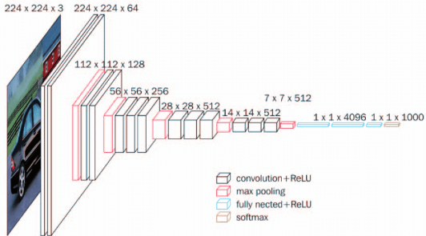
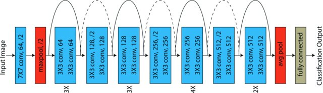

v.
Overview
- What is convolutional neural network (CNN)?
- How can we define a CNN?
- Typical CNN architectures
Convolutional Neural Network (CNN)
Neural Nets in Computer Vision
- One of the core domain in CS and AI
- Identify (classify) visual objects
- NNs are the state-of-the-art solution techniques
- Natural representation of human vision's reception field
- Intuitive model for convolutional networks
Theoretical Ideal Solution
- Normal NN with fully connected layers (each node is $\qquad\qquad\qquad\qquad$
connected to every single node in the next layer) - Can learn (almost) any data model
- If we don't need a connection $\to$ set its weight to 0
- Should be able to identify "any" visual object
- Issues:
- Too many parameters to update
- e.g. $100 \times 100$ picture in pixels
1 hidden layer with 1,000 neurons
$\implies$ 10 million parameters!
$100 \times 100 \times 1,000 = 10,000,000$
Practical Solution
- Convolutional Layer
- Motivated by nature
- Neurons in the first convolutional layer are not
connected to every single pixels in the input image, but
only to pixels in their receptive fields - The second convolutional layer: each neuron is connected only to neurons within a small rectangle of the first layer
- The next layer connects to the second convolutional layer in the same way, and so on...
Convolution Operation
- Convolution is very useful in signal processing
- $(f * g)(t) := \int_{-\infty}^\infty f(\tau)g(t-\tau)d\tau$
- For digital image, it's simplified as weighted sum
of pixel values - Different convolution kernel has different effects:
down-sample, up-sample, or keep the same size
smooth, sharpen, etc. - Except kernel size, other factors will affect
the output as well including padding, stride
Convolution: Kernel

- Kernel/filter works like a sliding-window (weighted sum)
- Same operation in each channel for colour image
- Padding: add extra rows/columns around the image (extra 0)
- Stride: step between adjacent convolution operations
Convolution: Padding & Stride
- Kernel size: $f$, padding size: $p$, stride size: $s$, input size: $i$, output size: $o$
- The equation: $o = \lfloor \frac{i+2\times p - f}{s} \rfloor + 1$


- (1) $f=3,p=0,s=1$; (2) $f=3,p=0,s=2$;
(3) $f=3,p=1,s=1$; (4) $f=3,p=1,s=2$; - (1) $\lfloor \frac{4+2\times 0 - 3}{1} \rfloor + 1 = 2$; (2)$\lfloor \frac{5+2\times 0 - 3}{2} \rfloor + 1 = 2$;
(3) $\lfloor \frac{5+2\times 1 - 3}{1} \rfloor + 1 = 5$; (4)$\lfloor \frac{5+2\times 1 - 3}{2} \rfloor + 1 = 3$;
Convolution: Filter, Padding, Stride

- Filter: decides the reception field size of the$\qquad\qquad\qquad\qquad\qquad\quad\quad$
current pixel - although it can be rectangle, usually
choose square filter (e.g. 3x3, 5x5) - Padding: smaller than the kernel size
- Stride: large stride will significantly reduce
the output size, but cause information loss - Sizes can be different along different directions for padding and strides
Pooling as Convolution
- Pooling: similar to convolution
- Kernel, padding, strides are the same
- But there is NO WEIGHT!!!
- Aggregation function: $max$ or $mean$
- max pooling, mean pooling
- Goal: reduce the image size (reduce the $\qquad\qquad\qquad\qquad\qquad\qquad\qquad$
complexity, computational load, memory) - CNN can tolerate small image shifts (location invariance)
Feature Maps
- Multiple filters can be applied at each layer$\qquad\qquad\qquad\qquad\qquad\qquad$
- The convolution results can be considered as
filtered feature maps of the input image - Stack 2D feature maps as layers on top of each
other $\implies$ 3D stacks - During training CNN learns the most useful
features - Combines them into more complex patterns
CNN Layers
Layers are building blocks for create a CNN- Convolutional layer (CONV): where convolution operation happens
- Activation layer (ACT): apply a nonlinear activation function, usually RELU
- activation layers are assumed to be part of CNN and often omitted in the table/diagram to save spaces
- Pooling (POOL): reduces the size of input ($max$ or $mean$)
- Fully connected (FC): where each neuron is fully connected to all neurons in the previous layer
CNN Layers (2)
- Batch normalisation (BN): normalise the activations of a given input before passing it into the next layer
- it helps to prevent overfitting but slows down the training process
- Dropout (DO): with probability $p$, randomly disconnect inputs from the preceding layer to the next layer in the network architecture
- reduce overfitting by explicitly altering the network architecture at training time
INPUT $\implies$ $\big($(CONV + RELU)*N + POOL?$\big)$*M $\implies$
(FC + RELU)*K $\implies$ FC $\implies$ OUTPUT
Memory Requirement of CNN
- Convolutional layers require a huge amount of RAM, especially during training
- because the backpropagation process requires all the intermediate values computed during the forward pass
- Example: only 1 convolutional layer with filter $5\times 5$, stride = 1 and padding = 2 (recall: $o = \lfloor \frac{i+2\times p - f}{s} \rfloor + 1$), with 200 feature maps
- Total parameters for conv-layer:
- $\qquad\qquad w_c = 5^2\times 3 \times 200 = 15,000$, $b_c = 200$, $P_c=w_c+b_c=15,200$
- If the image size is (150,100), that's 225 million float multiplications!
$\qquad\qquad\qquad 150\times 100 \times 15,000 = 225,000,000$ - The parameters of the fully connected layer are with orders of magnitude more than this (usually tens of millions)
Memory Issue in CNN
- Training may crash because of out-of-memory (OOM) error
- Reduce the mini-batch size
- Reduce the dimensionality using large stride
- Reduce the depth of the network by removing some layers
- Use less filters for some layers
- Use 16-bit floats instead of 32-bit (FP16 supports)
- Distribute the CNN across multiple GPUs/devices
CNN Example
- A typical CNN architecture is like this:

- Convolutional layer followed by pooling layer $\gets$ may appear multiple times
- Fully connected layers as the last (several) layers before output
Deep CNN
- The more powerful the computer becomes, the deeper the CNN can be
- In practice, the adjacent blocks halving the size/doubling the features
- Output number equals to the number of categories (classes)
LeNet-5
- Perhaps the most widely known CNN architecture (2C+3FC)
- Created by Yann LeCun in 1998 and widely used for handwritten digits recognition (MNIST dataset)
AlexNet

- Developed by Alex Krizhevsky, Ilya Sutskever, and Geoffrey Hinton
- Won the 2012 ImageNet LargeScale Visual Recognition Challenge (ILSVRC) by a large margin
- achived $17\%$ top-5 error rate while the second best achieved only $26\%$
- Quite similar to LeNet-5, only much larger and deeper $\implies$ 5C+3FC
- The first to stack convolutional layers directly on top of each other, instead of stacking a pooling layer on top of each convolutional layer
LeNet vs. AlexNet
GoogLeNet
- Developed by Christian Szegedy et al.
- Won the ILSVRC 2014 by pushing the top-5 error rate below $7\%$
- Network was much deeper than previous CNNs
- Contains sub-networks called inception modules (inspired by Nolan's movie
Inception, networks in networks) that use parameters much more efficiently - GoogLeNet actually has 10 times fewer parameters than AlexNet (roughly 6 million instead of 60 million)
GoogLeNet Structure
$\qquad$Inception Module and GooLeNet Structures

RESNET
- Winner of ILSVRC 2015
- Developed by Kaiming He
et, al. : RESidual Neural nETwork - Delivered an astounding top-5 error rate under $3.57\%$
- Extremely deep CNN composed of 152 layers
- it has other variants: 35, 50, 101 layers
- No dropout, no FC except the last 1,000 softmax for classification
- Key idea is to skip connections (also called shortcut connections): the signal feeding into a layer is also added to the output of a layer located a bit higher up the stack
RESNET Structure
Skip Connection
- Each residual block consist several other
layers and one skip connection - Also known as identity connection
- Preserve information from previous layers
- Can skip layers that output close to 0 and
block backpropagation
Summary
- History of CNN
- CNN operations, layers:
CONV, ACT, POOL, FC, BN, DO - Typical CNN architectures:
LeNet, AlexNet, GooLeNet, RESNET
Questions?